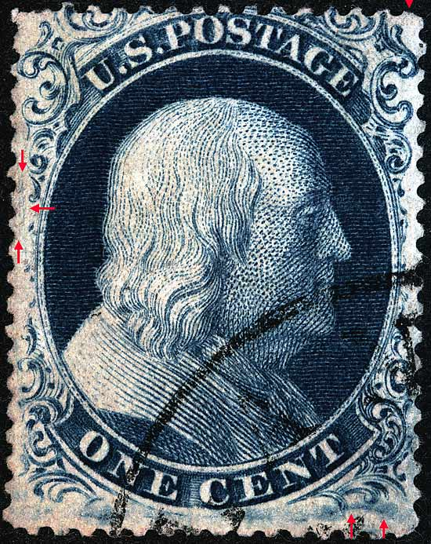
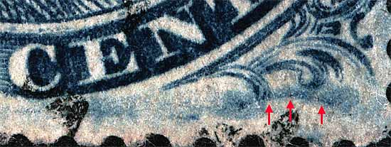
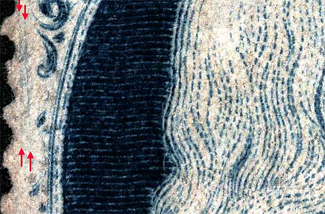
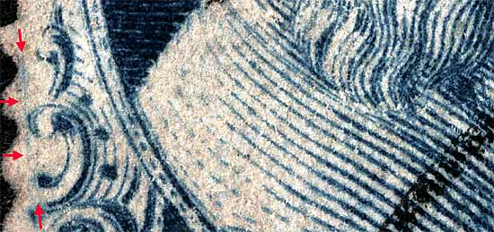

1¢ Franklin Issue of 1851-1857, PLATE 4 Position 3L4 |
Type II, Relief A Issued both imperforate (Scott 7) and perforate (Scott 20). Plate 4 changed it's appearance as many plating marks faded away due to plate wear, and new plating marks developed over the life of the plate. One of the most annoying aspects of trying to identify Plate 4 positions is the appearance and disappearance of these plating marks. Note: A pair of near vertical plate scratches in the left margin. The very edge of the top row guide dot can barely be seen at the far right. |
|  |
| Figure 1. (BELOW) An impressive moon-shaped curved blur as illustrated in the plating diagrams. Similar blurs appear on most Plate 4 top row stamps.
 |
| Figure 2. (BELOW) A pair of near vertical plate scratches in the left margin to the left of Ornament D as illustrated in the plating diagrams.
 |
| Figure 3. (BELOW) A scratch to the left of Ornaments E-F-G is not illustrated in the Ashbrook/Neinken plating diagrams but has been confirmed as consistent.
 |
| DISCLAIMER and COPYRIGHT INFORMATION: Thanks for visiting this site. I hope you learn something new as we are making new discoveries all the time. You, the visitor, have my permission to link to my pages and to share the INFORMATION with others. The images themselves fall under the fair use guidelines established by the United States Congress and Copyright law. Basically contact us before using. I also ask in return that you send me an e-mail if I have made a mistake, or have made some other technical blunder that in my rush to put these pages up would cause the visitor confusion. Please also visit my other website at www.slingshotvenus.com. and support the live music arts. While your there, be sure to purchase our music. There are not many philatelic rock stars around and we need all the help we can get. :-) I can be reached at: nerdman@ix.netcom.com |